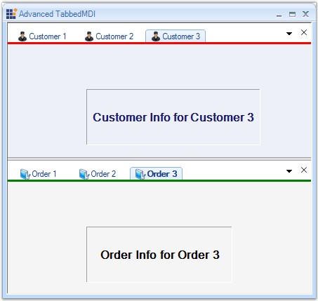
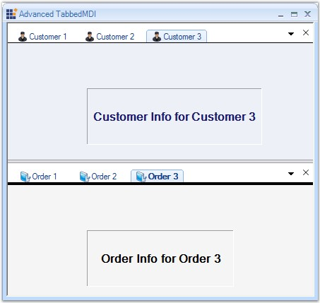

Border Color
To set the Border Color of the borders that appear under the MDI tabs, we can use the BottomBorderColor property of TabGroupHosts.
|
[C#]
tabbedMDIManager.TabGroupHosts[0].BottomBorderColor=Color.Red; tabbedMDIManager.TabGroupHosts[1].BottomBorderColor = Color.Green; |
|
[VB]
tabbedMDIManager.TabGroupHosts(0).BottomBorderColor=Color.Red tabbedMDIManager.TabGroupHosts(1).BottomBorderColor = Color.Green |

Figure 1093: Tab Groups with different Border Colors
Border Height
To set the Border Height of the borders, we can use the BottomBorderHeight property of TabGroupHosts.
|
[C#]
// To set the Border Height. tabbedMDIManager.TabGroupHosts[0].BottomBorderHeight = 0; tabbedMDIManager.TabGroupHosts[1].BottomBorderHeight = 3; // To set the Border Color. tabbedMDIManager.TabGroupHosts[0].BottomBorderColor = Color.Black; tabbedMDIManager.TabGroupHosts[1].BottomBorderColor = Color.Black; |
|
[VB]
'To set the Border Height. tabbedMDIManager.TabGroupHosts(0).BottomBorderHeight = 0 tabbedMDIManager.TabGroupHosts(1).BottomBorderHeight = 3 'To set the Border Color. tabbedMDIManager.TabGroupHosts(0).BottomBorderColor = Color.Black tabbedMDIManager.TabGroupHosts(1).BottomBorderColor = Color.Black |

Figure 1094: Tab Groups with different Border Heights
A sample which illustrates this feature is available in the below sample installation location.
...\My Documents\Syncfusion\EssentialStudio\Version Number\Windows\Tools.Windows\Samples\2.0\Tabbed MDI Package\AdvancedTabbedMDI